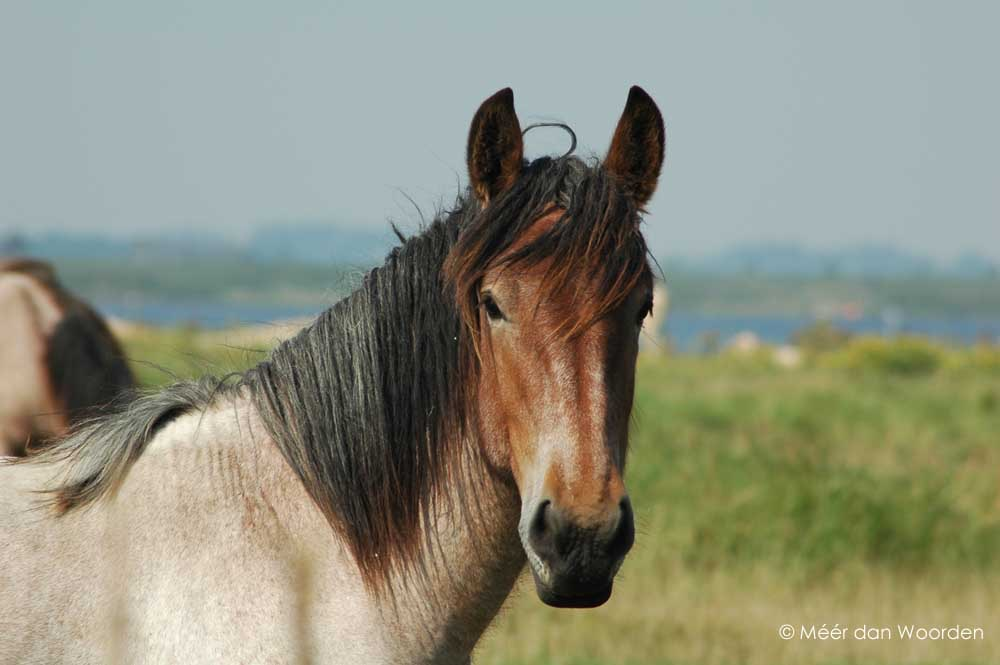
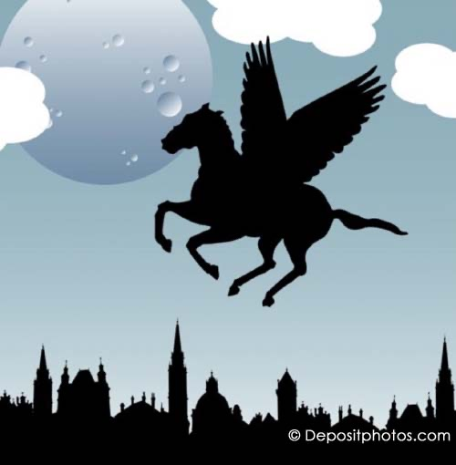

In mei en juni hebben talloze scholieren en studenten last van repetitie- en examenstress. Dat herinnert me vaak aan mijn eigen studiestress, maar ook aan de studiepret die ik gelukkig in hogere mate beleefde. Zo moest ik onlangs terugdenken aan een schrijfopdracht voor Nederlands, ik meen in 4-vwo. De leraar vroeg: “Welk dier zou je willen zijn en waarom?” Ik vond het een even verrassende als inspirerende vraag en ging er enthousiast op los.

Zonder enige twijfel koos ik voor het paard, daar identificeerde ik me per slot van rekening het liefst mee. Om zijn edele karakter, prachtig mooie manen en gevoelige ogen, maar ook omdat het paard tegelijk sierlijk en krachtig is. Alles wat ik ook wilde zijn. Maar, het allerbelangrijkste, ik zou alleen een wild paard willen zijn, want vrij! Dus absoluut geen stalpaard, dressuurpaard, renpaard of trekpaard, nee op míjn rug geen zadel en al helemaal geen ruiter die me stuurt, laat staan commando’s geeft. En van kunstjes op muziek, springen op een hindernisbaan of het trekken van een kar of koets ga ik als vrijheidsstrijder in hart en nieren bij het idee alleen al spontaan steigeren. Sorry, daar ben ik simpelweg te sensitief voor, ja inderdaad, zoals een paard. Of wat te denken van mijn vrije wil. Nee, als gedomesticeerd paard zou ik me serieus gevangen voelen en er werkelijk alles aan doen om los te breken. Met andere woorden, voor elke ruiter of menner zou ik een ware kwelling zijn.
Altijd wanneer ik terugdenk aan dat opstel, zie ik nog steeds de beelden van toen voor me, ook al zijn we inmiddels zo’n veertig jaar verder. Onbevangen galoppeer ik als een wild indianenpaard -een gevlekte Mustang of Appaloosa- over de Argentijnse pampa’s of over de prairies van het Wilde Westen. En omdat dromen gelukkig geen grenzen kennen, een volgende keer net zo makkelijk als bruin-witte Tinker over de groene Ierse heuvels of als stoer Zeeuws trekpaard met oerkracht door de branding van een woeste zee. Puur, ruig en… vrij.
Afijn, tot zover even mijn paardendromen, terug naar de schrijftoets. Na afloop fietste ik zo snel als ik kon huiswaarts om het verhaal over mijn dierlijke metamorfose te vertellen aan mijn mams, die niet alleen haar hoog-sensitiviteit maar ook de liefde voor taal aan mij doorgaf (mijn ondernemende vader overigens zijn vrije wil). Mama luisterde ademloos en ik zag de liefdevolle (h)erkenning in haar ogen, maar daardoorheen ook iets van een vraag. Ze liet me echter uitdraven tot aan de eindstreep, waar ik buiten adem van vervoering aankwam. ‘Wat een mooi verhaal, meid, echt jij! Maar…, wat ik me wel afvraag, waarom geen vogel? Als vogel kun je he-le-máál vrij zijn, in de lucht zijn geen grenzen, op het land nog wel. En behalve dat je als vogel overal heen kan, kun je ook nog eens alles goed overzien.”
Ik weet nog hoe ik stilviel, zowel van verbazing als van ontgoocheling, want ze had gelijk. Dat wil ik inderdaad ook, zo vrij zijn als een vogel, hoog in de lucht, over landen en over zeeën. Hoe kon het, dat ik daar geen seconde aan gedacht had? Dat ik met het wilde paard dacht mijn identiteit te hebben gevonden? Zucht, van de euforie van het paard naar de kater van de teleurstelling!
Zwaar sip ben ik afgedropen, ook dat weet ik nog, naar zolder, mijn slaapkamer en veilige haven. Daar heb ik me op bed laten vallen en ben door het grote dakraam naar de wijde wolkenhemel gaan liggen staren. Dat doe ik trouwens nog steeds als ik het even niet meer weet. Altijd kijk ik dan dromerig naar de lucht en laat mijn gedachten meevoeren met de wolken, voort geblazen door de wind, over land en over zee, eindeloos. Tot ze in de vorm van regendruppels, sneeuwvlokken, ijskristallen of hagelstenen uit de lucht terug neerdalen op aarde en via de rivieren ten slotte uitmonden in zee. Om daar wederom als dampdruppels uit op te stijgen naar de hemel, waarmee de grote reis van gedaantewisselingen gewoon van voren af aan opnieuw begint. De continue cyclus van de metamorfose, perpetuum mobile van het leven.

En geloof het of niet, precies zoals de metamorfose van waterdruppels, zo transformeerde ook mijn paardendroom. In gedachten vormde het wilde paard langzaam maar zeker een symbiose met de vrije trekvogel, en -net zoals de rups uit het vlindereitje kruipt, zich verpopt en dan een vlinder wordt- zo werd ik Pegasus, het gevleugelde paard dat naar de goden op de Olympus vliegt, naar de sterren aan de hemel en… naar de poëten op aarde.
Over dieren gesproken! En over vrijheid!